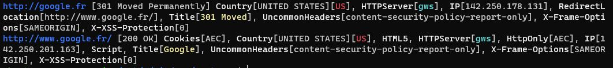

Whatweb : Serveur de site internet
La machine virtuelle dispose d'une distribution Linux intégrée, qui vous permet d'utiliser des outils de recherche en sources ouvertes ou d'aide aux investigations.
Choisissez ci-dessous le type d'investigations que vous souhaitez mener et laissez-vous guider dans la création de la ligne de commande nécessaire.
Cette ligne de commande devra simplement être copiée/collée dans le terminal WSL.


Whatweb
WhatWeb est un outil de reconnaissance automatisée qui scanne les sites web pour identifier les technologies qu'ils utilisent. Pour l'enquêteur, l'intérêt est de pouvoir obtenir l'adresse IP du serveur sur lequel est hébergé le site internet.
Munissez-vous de l'adresse du nom de domaine sur laquelle portent vos investigations (au format "google.fr", sans utiliser "www" ou "https://"). Renseignez cette donnée dans le champ ci-dessous :
(Format : example.com)
Le résultat obtenu se présente sous cette forme :

Les plus importantes sont les premières IP visibles, ici "142.250.178.131" (pour http://google.fr) et "142.250.201.163" (pour http://www.google.fr). Il s'agit des adresses IP des serveurs hébergeant le site internet.